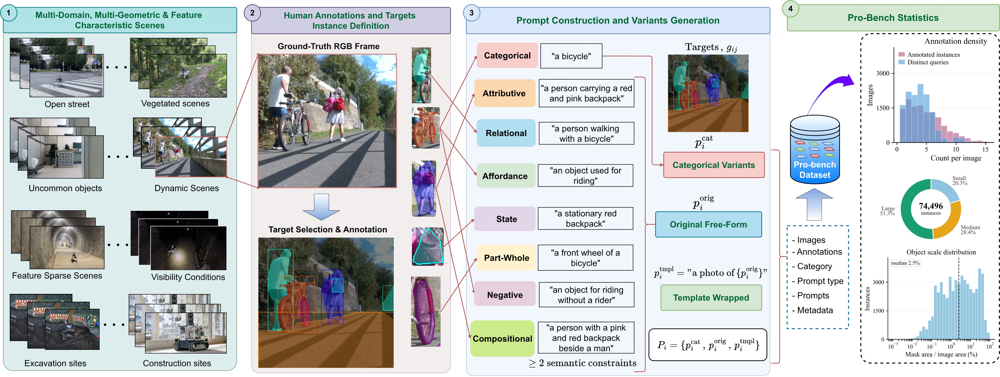
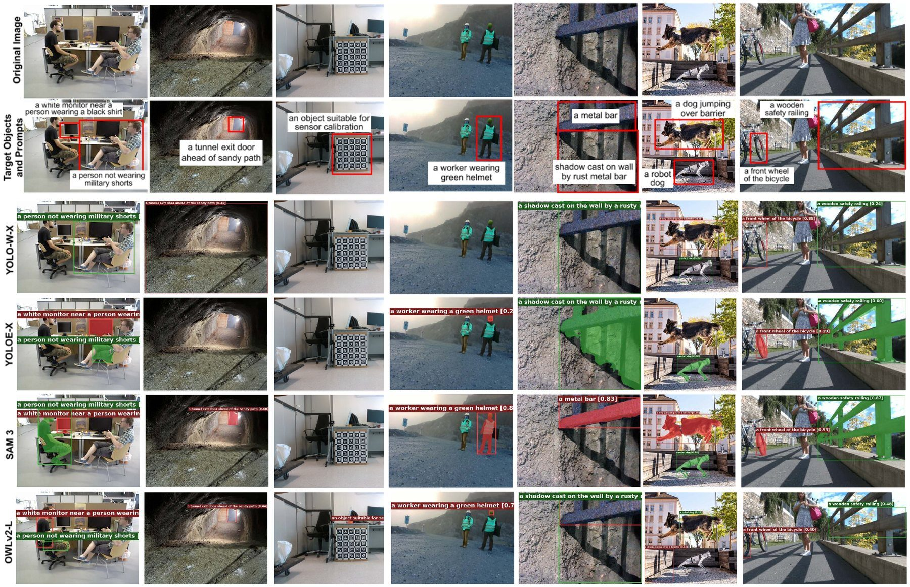

Abstract
Open-vocabulary visual grounding enables robots to localise task-relevant entities from natural-language queries without dependence on predefined perceptual taxonomies. However, existing benchmarks largely rely on short category labels and web-scraped imagery, leaving it unclear whether open-vocabulary models can robustly ground diverse queries and visual conditions under real deployments. We introduce Pro-Bench, a prompt-conditioned benchmark for open-vocabulary visual grounding in heterogeneous, real-world environments. Pro-Bench includes 13k+ RGB frames from independent robotic domains (subterranean, industrial, indoor, outdoor, urban), with 74.5k manual instance annotations and 515 target queries covering categorical, attributive, relational, affordance, state, part-whole, negative, and compositional semantics. We benchmarked 16 open-vocabulary model configurations in strict zero-shot inference, measuring localisation accuracy across IoU thresholds, end-to-end inference latency, prompt-induced performance variation, and target recovery consistency. Our results show that prompt-robustness is strongly architecture-dependent. Most model configurations (10/16) perform best with short category labels, whereas free-form queries yield the highest accuracy for only one. Moreover, similar aggregate mAP can conceal substantial differences in consistent target recovery across reformulations. Pro-Bench enables systematic evaluation of these gaps and supports prompt-robust visual grounding.
- 13k+
- RGB frames from independent robotic domains (subterranean, industrial, indoor, outdoor, urban), no web or synthethic imagery
- 74.5k
- human-annotated polygon-based instances, boxes and masks in multiple formats, e.g., COCO, suitable for benchmarking visual reasoning models
- 515
- operator-style queries, each with three target-preserving formulations
- 8
- semantic prompt types, from categorical to compositional
- 16
- open-vocabulary model configurations, evaluated strictly zero-shot on an RTX 4090
Pro-Bench at a glance
What Pro-Bench found
An operator can refer to the same object in several ways. Most current open-vocabulary models performed exceptionally well with atomic or short categorical phrasing, and some break on harmless rewording.
Short categorical labels still win
10 of 16 configurations score highest with the categorical label, 5 with the template form, and only YOLOE-X with the operator's free-form query.
A template-based method can break model predictions
Prefixing "a photo of" drops SAM3 from 0.417 to 0.044 mAP.5, while G-DINO-T gains 0.069 from the same change.
Stable boxes are not reliable recovery
SAM3's boxes barely move between phrasings (PLC 0.984), yet it recovers only 2.4% of targets under all three (PCR 0.024).
Real time costs accuracy
Within a 30 Hz budget, OmDet-T is the most accurate at 0.431 mAP.5. SAM3-Lite leads overall at 0.696 but needs 683 ms per frame.
Same target, three phrasings
mAP.5 of each model under each formulation. The line spans the prompt-induced variation Δmax; the ringed dot is the model's best formulation.
Best formulation across the 16 model configurations:
The benchmark
Pro-Bench RGBs are curated from real robot sensors across diverse environments, enabling the models to face low light, occlusions, unusual viewpoints, and domain-specific objects common in real-world scenarios. Click on a scene below to view the target annotations.
Where the data come from:
- 1) Subterranean and industrial
- Tunnels, quarries, mines and excavation sites from DARPA SubT, EnvoDat, Hilti-SLAM and GOOSE-Ex.
- 2) Outdoor and urban
- Forest trails, unstructured terrain and street scenes from EnvoDat, GOOSE-Ex, KITTI, MCD and our own campus recordings.
- 3) Indoor and laboratory
- Offices, labs and tabletops with clutter and look-alike objects, from TUM RGB-D, EnvoDat and in-house scenes.
Data Annotation:
Each RGB frame is annotated with a free-form query and at least one semantic type, from which the categorical and template-wrapped variants are derived. Seven annotators contributed fine polygon boundaries for common and uncommon objects, and a separate reviewer checked every annotation against its query. Object sizes: 51.3% large, 28.4% medium, 20.3% small; median mask area is 2.5% of the image.
Eight semantic prompt types:
| Type | Identifies the target by | Example |
|---|

Prompt robustness quantification
Every target is queried three ways. Each formulation keeps the same referent, so a robust model should find the same object every time.
Original porig
an object suitable for sensor calibrationThe operator's free-form query, as written by the annotator.
Categorical pcat
a checkerboardA manually reviewed class-level noun phrase that drops attributes, relations, state and affordance.
Template ptmpl
a photo of an object suitable for sensor calibrationThe original query wrapped in the CLIP-style prompt template.
Prompt-induced variation
The spread of mAP.5 across the three formulations. Larger means the model depends more on how the target is phrased.
Prompt-consistent recall
The share of targets recovered at IoU ≥ 0.5 under every formulation. One miss under any phrasing counts as a failure.
Localisation consistency
For targets recovered under all formulations, the mean pairwise IoU of the matched boxes: how much the box moves when the wording changes.
Results
All the 16 model configurations are evaluated in strict zero-shot with frozen public weights and each model's own prompt interface. Latency is end-to-end on RTX 4090, after three warm-up passes.
Accuracy against latency
The line traces the Pareto frontier; the shaded band is the 30 Hz real-time budget of a standard RGB-D camera.
Recovery against stability
PCR.5 (found under all three phrasings) against PLC (box stability once found).
Localisation tightness
How much of each model's mAP.5 survives at stricter overlap (mAP.5:.95 ÷ mAP.5).
Full results
Select a column to sort. Shaded cells are the best and second-best values; latencies within the 30 Hz budget are highlighted.
Qualitative examples
A model can find the right region yet box it far too loosely, or miss a target that is plainly visible when the query describes it indirectly. No representative model returns a valid prediction for "an object suitable for sensor calibration", although the checkerboard fills the frame.

Video summary
- Compare models
- Compares the models' performance per query, per scene, and for every selected targets.
- Prompt robustness
- Runs the original, categorical and template forms per model. Mark the target and each model reports whether it found it under each phrasing.
- Live camera
- Webcam, OpenCV or RealSense input. Each model runs on the newest frame at its own speed, and you can edit the query while it streams.
Steps for running it on your own GPU are in Try it yourself.
Try it yourself
Pick a scene and a query, then watch what each model returns when the same target is queried in three different ways. The walkthrough and the setup steps to run the benchmark on your own data are shown in the video.
How to use this demo
- Load a scene. Click a thumbnail, or hit Random to jump to another environment. The dashed white box marks the annotated target.
- Pick a target query. Each scene carries the operator-style queries written for it, labelled with their semantic type: relational, affordance, negative and so on.
- Choose the phrasing. All three at once to compare, or one at a time to see every box that phrasing returned with its confidence.
- Choose the models. Start with the top six, switch to the real-time group or all of them, and raise the minimum score to drop weak detections.
- Read the result. Each card says whether that model found the target at IoU ≥ 0.5 under each phrasing, how many of the three it recovered, and how far the box moved between them.
Run on your own image
Hosted models: .
The walkthrough, recorded in real time on an RTX 4090. The project video is in the Video summary section.
Run it on your own machine
The demo loads the real model weights, so it runs locally on a CUDA GPU.
- Get the code and the weights. Clone the release and install the
requirements.
pip install -r requirements.txt
- Start the demo server against the pro-bench config.
python demo_server.py \ --config configs/benchmark.yaml \ --keep-resident \ --examples-dir demo_examples
- Open
http://localhost:8000and pick a mode: compare models, prompt robustness, or live camera. - Give it a scene. Upload an image, point it at a folder, or capture a frame from a webcam or RealSense camera.
Needs a CUDA GPU. All 16 models resident takes about 24 GB of VRAM;
drop --keep-resident to load them one at a time on less.
Cite Pro-Bench
To cite this work, please use the following BibTeX entry:
@article{nwankwo2026probench,
title = {Pro-Bench: Prompt-Robust Open-Vocabulary Visual Grounding Across Real-World Heterogeneous Environments},
author = {Nwankwo, Linus and Alaran, Muslim and Rauch, Christian and Obilikpa, Stanley Chukwuebuka and Rueckert, Elmar},
journal = {arXiv preprint},
year = {2026}
}